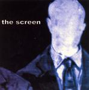

| Artist: | The Screen |
| Title: | The Screen |
| Label: | Red Fex Records TSM-030303 |
| Length(s): | 45 minutes |
| Year(s) of release: | 2003 |
| Month of review: | [03/2004] |
| 1) | Witness | 3.33 |
| 2) | Primetime | 5.06 |
| 3) | Leech | 4.07 |
| 4) | The Drive | 5.33 |
| 5) | Parallax | 4.36 |
| 6) | Last Man Standing | 6.11 |
| 7) | Brings Me Back | 4.40 |
| 8) | Mezzanine | 3.16 |
| 9) | Parallax (Radio Edit) | 3.42 |
| 10) | Brings Me Back (Radio Edit) | 3.49 |
Primetime is a more slow moving, sadder song with some nice cello/violin as well. The melodies are good, the vocals strong, but no prog here, simply good pop music. In the middle we have a moody intermezzo with violins, playing softly in the back, building up slowly to something powerful, when the vocals set back in. Leech calls, by way of variation, Linkin Park to mind, the same melodicity, the same modern rock sheen, a bit less heavy and fewer rap like vocals, but still. The guitars can be quite hallucinating on this one.
The Drive continues in the same vein with varied vocal melodies and plodding drums. Some similarities to a band such as Pineapple Thief are apparent, both in the melodic songs they write as the final result. The Screen seems a bit heavier and in some undefinable way more American.
Parallax has quite heavy passages, alternated with dreamy, somewhat Arabic sounding vocals. Again it shows that Ziminisky is a very good singer. Last Man Standing is longest one on the album, the echoey opening in the vein of Pineapple Thief (and Porcupine Tree if you like), although the vocal melody reminds more of Jadis and It Bites.
Brings Me Back is one of the more ordinary songs on the album, except maybe the passage where the song title is sung. Mezzanine is officially the closer of this album.
That the band or the record label, see this album as something for the radio becomes apparent from the inclusion of the shorter radio edits of of Parallax and Brings Me Back.